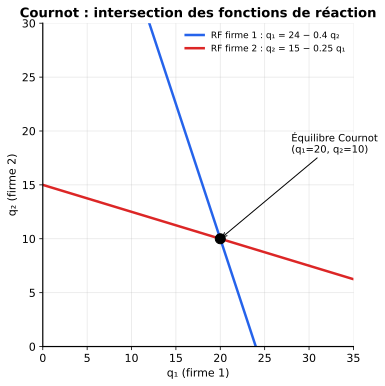
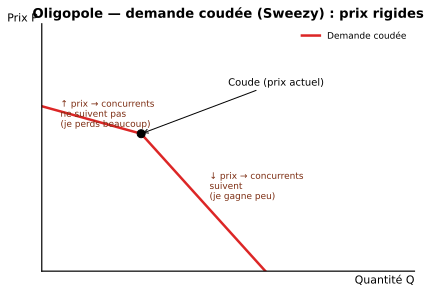
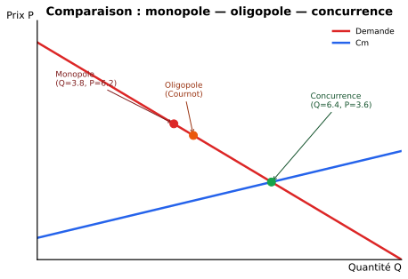

5 · Oligopole
Quelques firmes se partagent le marché ; chaque décision dépend de ce que font les autres → on raisonne en modèles stratégiques (Cournot, Stackelberg, Bertrand) avec des résultats très différents selon ce qui est choisi (quantité, prix, simultanément ou séquentiellement).
Caractéristiques
| Trait | Description |
|---|---|
| Petit nombre de firmes | 2 (duopole), 3, 4… typiquement |
| Interdépendance stratégique | La décision d’une firme dépend de celle des autres |
| Barrières à l’entrée | Économies d’échelle, brevets, capital élevé, marques |
| Produits homogènes ou différenciés | Selon les marchés |
En oligopole, tout le monde se regarde. Pepsi baisse ses prix ? Coca y pense aussi. Boeing lance un nouvel avion ? Airbus en lance un en réponse. C’est de la stratégie, pas juste de la maximisation isolée — d’où le besoin de la théorie des jeux (Ch.6).
Les trois modèles classiques
| Modèle | Choix | Comment ? | Résultat (prix) |
|---|---|---|---|
| Cournot | Quantité | Simultanément | Intermédiaire |
| Stackelberg | Quantité | Séquentiellement (un leader, un suiveur) | Plus bas que Cournot |
| Bertrand | Prix | Simultanément | \(P = Cm\) (concurrentiel !) |
1. Modèle de Cournot (quantités, simultané)
Chaque firme choisit sa quantité en supposant celle de l’autre fixée.
Construction des fonctions de réaction
Démarche générale pour une firme :
- Écrire le profit \(\pi_i = P(Q) \cdot q_i - C_i(q_i)\) avec \(Q = q_1 + q_2\).
- Dériver par rapport à \(q_i\) (en supposant \(q_j\) donné) et poser \(= 0\).
- On obtient la fonction de réaction \(q_i = R_i(q_j)\).
Équilibre de Cournot-Nash : intersection des deux fonctions de réaction.

Demande inverse : \(P = 60 - Q\) où \(Q = q_1 + q_2\). Coûts : \(C_1 = q_1^2/4\), \(C_2 = q_2^2\).
Firme 1 : \(\pi_1 = (60 - q_1 - q_2)q_1 - q_1^2/4\) \[\dfrac{d\pi_1}{dq_1} = 60 - 2q_1 - q_2 - q_1/2 = 60 - (5/2)q_1 - q_2 = 0\] \[\Rightarrow q_1 = (60 - q_2) \cdot 2/5 = 24 - 0.4\,q_2 \quad \text{(fonction de réaction 1)}\]
Firme 2 : \(\pi_2 = (60 - q_1 - q_2)q_2 - q_2^2\) \[\dfrac{d\pi_2}{dq_2} = 60 - q_1 - 4q_2 = 0 \Rightarrow q_2 = 15 - 0.25\,q_1\]
Équilibre : substituer dans \(q_1 = 24 - 0.4(15 - 0.25 q_1) = 18 + 0.1 q_1\) \[0.9\, q_1 = 18 \Rightarrow q_1 = 20,\ q_2 = 10\]
2. Modèle de Stackelberg (quantités, séquentiel)
Une firme (leader) choisit sa quantité en premier, l’autre (suiveur) réagit. Le leader anticipe la réaction du suiveur.
Démarche
- Calculer la fonction de réaction du suiveur (comme en Cournot).
- La substituer dans le profit du leader.
- Maximiser le profit du leader par rapport à sa propre quantité.
Fonction de réaction de la firme 1 (suiveur) : \(q_1 = 24 - 0.4 q_2\).
Profit de la firme 2 (anticipe la réaction de 1) : \[\pi_2 = (60 - q_1 - q_2)q_2 - q_2^2 = (60 - (24 - 0.4q_2) - q_2)q_2 - q_2^2 = (36 - 0.6q_2)q_2 - q_2^2\] \[\dfrac{d\pi_2}{dq_2} = 36 - 1.2 q_2 - 2 q_2 = 36 - 3.2 q_2 = 0 \Rightarrow q_2 = 11.25\] \[q_1 = 24 - 0.4 \cdot 11.25 = 19.5\]
Le leader produit plus que dans Cournot ; le suiveur, moins. Quantité totale plus grande → prix plus bas → mieux pour le consommateur.
3. Modèle de Bertrand (prix, simultané)
Chaque firme choisit son prix. Si les produits sont homogènes et les coûts identiques : la concurrence en prix pousse \(P\) jusqu’à \(Cm\) (résultat « concurrentiel » !).
Avec seulement 2 firmes en concurrence par les prix et produits identiques, \(P^* = Cm\) et profit = 0 — comme en concurrence parfaite. Surprenant mais logique : si tu fixes \(P > Cm\), l’autre fixe juste en dessous et te prend tout le marché.
→ En pratique, ce résultat est rare ; il faut des produits différenciés (Bertrand différencié) pour obtenir un équilibre avec profits.
Bertrand différencié
Si les produits sont différenciés (demandes croisées), on obtient un équilibre avec \(P > Cm\) et profits positifs. Démarche similaire à Cournot, mais avec les prix comme variables stratégiques.
4. Demande coudée (Sweezy) — pourquoi les prix sont rigides en oligopole
Une firme anticipe :
- Si elle augmente son prix → les concurrents ne suivent pas (ils gagnent des clients) → la firme perd beaucoup → demande très élastique vers le haut.
- Si elle baisse son prix → les concurrents suivent (pour ne pas perdre de clients) → la firme gagne peu → demande peu élastique vers le bas.
→ La demande perçue est coudée au prix actuel.

Conséquence : les prix bougent peu en oligopole, même si les coûts changent légèrement.
Comparaison des structures

| Structure | Quantité | Prix | Profit | Consommateur |
|---|---|---|---|---|
| Concurrence parfaite | Maximale | \(P = Cm\) | 0 (LT) | Le mieux |
| Oligopole (Bertrand homogène) | = CP | = CP | 0 | = CP |
| Oligopole (Stackelberg) | > Cournot | < Cournot | > 0 | Mieux que Cournot |
| Oligopole (Cournot) | Intermédiaire | Intermédiaire | > 0 | Intermédiaire |
| Oligopole (cartel) | = monopole | = monopole | maximal | Le pire (= monopole) |
| Monopole | Minimale | Maximale | Maximal | Le pire |
\[Q_{cartel} < Q_{Cournot} < Q_{Stackelberg} < Q_{CP}\]
Donc, pour les prix, l’ordre est inverse : \(P_{cartel} > P_{Cournot} > P_{Stackelberg} > P_{CP}\).
→ Pour les consommateurs : Bertrand homogène / CP = meilleur ; Cartel / Monopole = pire.
Cartel (collusion)
Si les firmes coopèrent et fixent ensemble \(Q\) pour maximiser le profit total = elles agissent comme un monopole.
Condition : \(Rm_{industrie} = Cm_{industrie}\) pour le niveau total \(Q\).
Problème : le cartel est instable — chaque firme a intérêt à tricher (vendre un peu plus pour gagner plus à court terme). C’est le dilemme du prisonnier appliqué (Ch.6).
- Cournot : on choisit la quantité simultanément → équilibre = intersection des fonctions de réaction.
- Stackelberg : un leader, un suiveur → le leader anticipe le suiveur, produit plus, gagne plus.
- Bertrand : on choisit le prix → si produits homogènes, \(P = Cm\) (paradoxe).
- Demande coudée : explique pourquoi les prix sont rigides en oligopole.
- Cartel : équivalent à un monopole, mais instable (chacun a intérêt à tricher).